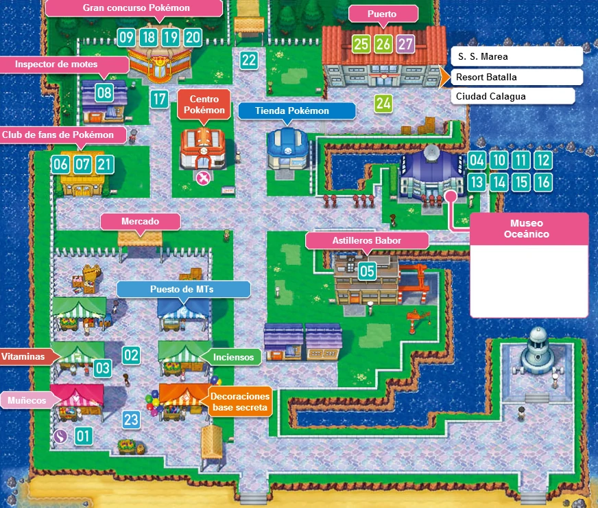
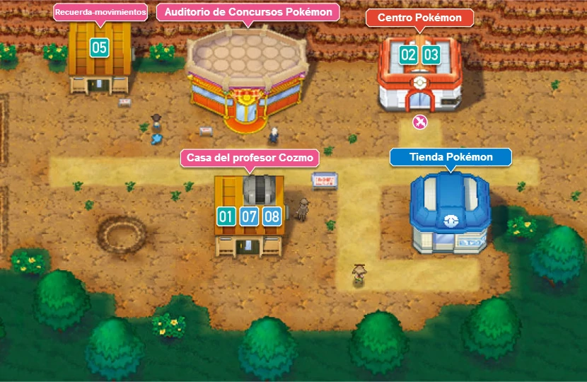
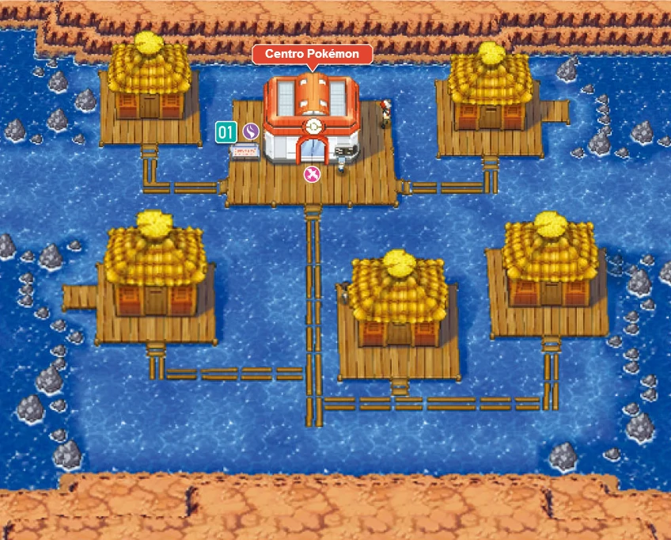

Hoenn
Hoenn es una isla, a diferencia de Johto y Kanto. En realidad, la región de Hoenn no es solo una
isla, ya que también incluye varias islas separadas, formando un archipiélago.
las diferentes ciudades, pueblos y rutas que forman Hoenn son las siguientes:
-
Villa Raíz

- Casa del jugador
- Casa del rival
- Laboratorio del profesor Abedul
-
Pueblo Escaso
-
Ciudad Petalia
- Centro Pokemon
- Tienda
- Casa de Blasco
-
Gimnasio pokemon de tipo normal
-
Ciudad Férrica
- Centro Pokemon
- Tienda
- Devon S.A
-
Gimnasio pokemon de tipo roca
-
Pueblo Azuliza
- Centro Pokemon
- Tienda
-
Gimnasio pokemon de tipo lucha
-
Ciudad Portual

- Centro Pokemon
- Tienda
- Museo oceánico
- Tienda batalla
- Inspector de motes
- Club de fans pokémon
- Puerto
-
Ciudad Malvalona
- Centro Pokemon
- Tienda
- Tienda de bicicletas
Gimnasio pokemon de tipo eléctrico
-
Pueblo Verdegal
- Centro Pokemon
- Tienda
- Tienda batalla
-
Pueblo Lavacalda
- Centro Pokemon
- Tienda
- Herbolario
-
Gimnasio pokemon de tipo fuego
-
Pueblo Pardal

- Centro Pokemon
- Tienda
- Casa del profesor Cozmo
-
Ciudad Arborada
- Centro Pokemon
- Tienda
-
Gimnasio pokemon de tipo volador
-
Ciudad Calagua
- Centro Pokemon
- Tienda
- Edificio de concursos pokémon
- Casa del quita-movimientos
- Centro comercial
- Motel Aguacala
- Museo de ciudad Calagua
- Club de fans pokémon
- Puerto
- Guarida del equipo Magma/Aqua
-
Ciudad Algaria
- Centro Pokemon
- Tienda
- Casa de Máximo (campeón)
- Central espacial
- Casa de minijuegos
Gimnasio pokemon de tipo psiquico
-
Arrecípolis
- Centro Pokemon
- Tienda
- Cueva Ancestral
Gimnasio pokemon de tipo hielo
-
Pueblo Oromar

-
Ciudad Colosalia
- Centro Pokemon
- Calle Victoria
Liga pokémon de Hoenn
En Hoenn se pueden encontrar 135 especies distintas de pokémons:
- - Treecko
- - Grovyle
- - Sceptile
- - Torchic
- - Combusken
- - Blaziken
- - Mudkip
- - Marshtomp
- - Swampert
- - Poochyena
- - Mightyena
- - Zigzagoon
- - Linoone
- - Wurmple
- - Silcoon
- - Beautifly
- - Cascoon
- - Dustox
- - Lotad
- - Lombre
- - Ludicolo
- - Seedot
- - Nuzleaf
- - Shiftry
- - Taillow
- - Swellow
- - Wingoll
- - Pelipper
- - Ralts
- - Kirlia
- - Gardevoir
- - Surskit
- - Masquerain
- - Shroomish
- - Breloom
- - Slakoth
- - Vigoroth
- - Slaking
- - Nincada
- - Ninjask
- - Shedinja
- - Whismur
- - Loudred
- - Exploud
- - Makuhita
- - Hariyama
- - Azurill
- - Nosepass
- - Skitty
- - Delcatty
- - Sableye
- - Mawile
- - Aron
- - Lairon
- - Aggron
- - Meditite
- - Medicham
- - Electrike
- - Manectric
- - Plusle
- - Minun
- - Volbeat
- - Illumise
- - Roselia
- - Golpin
- - Swalot
- - Carvanha
- - Sharpedo
- - Wailmer
- - Wailord
- - Numel
- - Camerupt
- - Torkoal
- - Spoink
- - Grumpig
- - Spinda
- - Trapinch
- - Vibrava
- - Flygon
- - Cacnea
- - Cacturne
- - Swablu
- - Altaria
- - Zangoose
- - Seviper
- - Lunatone
- - Solrock
- - Barboach
- - Whiscash
- - Corphish
- - Crawdaunt
- - Baltoy
- - Claydol
- - Lileep
- - Cradily
- - Anorith
- - Armaldo
- - Feebas
- - Milotic
- - Castform
- - Kecleon
- - Shuppet
- - Banette
- - Duskoll
- - Dusclops
- - Tropius
- - Chimecho
- - Absol
- - Wynaut
- - Snorunt
- - Glalie
- - Spheal
- - Sealeo
- - Walrein
- - Clamperl
- - Huntail
- - Gorebyss
- - Relicanth
- - Luvdisc
- - Bagon
- - Shelgon
- - Salamence
- - Beldum
- - Metang
- - Metagross
- - Regirock
- - Regice
- - Registeel
- - Latias
- - Latios
- - Kyogre
- - Groudon
- - Rayquaza
- - Jirachi
- - Deoxys